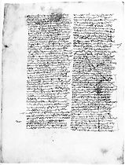
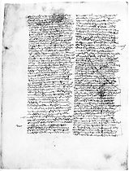

|  |
|---|
Fragmenta a B. Decker Lugduni Batauorum 1959 edita
et automato translata a Roberto Busa SJ in taenias magneticas
denuo recognovit Enrique Alarcón atque instruxit


|  |
|---|


[92388] Priora Super De Trinitate, pars 2 q. 4 a. 2 co. Responsio. Dicendum quod individua unius speciei in genere substantiae inveniuntur habere diversitatem et in materia et in forma et in accidentibus. Duorum enim sunt et diversa corpora et diversae animae et alia atque alia accidentia. Sed primum principium huius diversitati non potest esse forma, in quantum huiusmodi, quia ex forma tali consequitur materia esse sub determinata ratione. Unde si sit
[92389] Priora Super De Trinitate, pars 2 q. 4 a. 3 arg. 5 Praeterea, substantiae spirituales non videntur a corporalibus quadam subtilitate distinguuntur. Substantiae autem spirituales non impediuntur ab hoc quod sint
[92390] Priora Super De Trinitate, pars 3 pr. 1 (...) ibi: que vere forma est. Prima autem pars dividitur in duas. In prima dicit, de quo est intentio. In secunda prosequitur propositum, ibi: nam cum tres sint et cetera. Circa primum duo facit. Primo enim os- dicit, quid sit in ipso principio inquisitionis dicendum. Secundo ostendit necessitatem, quare primo dicendum sit, ibi: nam sicut optime et cetera.
[92391] Priora Super De Trinitate, pars 3 pr. 3 (...) ibi: In naturalibus igitur et cetera. Circa primum duo facit. Primo ponit distinctionem partium speculativae philosophiae. Secundo distinguit ea de quibus consi- ostendit quomodo huiusmodi partes ad invicem differant secundum ea, de quibus sunt, ibi: naturalis in motu et cetera.
[92392] Priora Super De Trinitate, pars 3 q. 5 a. 1 co. 2 (...). Ex parte siquidem intellectus competit ei quod sit immateriale, ea enim sunt intelligibilia quae vel a materia ast- abstrahuntur vel in se ipsis sunt.
[92393] Priora Super De Trinitate, pars 3 q. 5 a. 1 co. 3 quaedam igitur sunt quae sunt a materia et motu materia autem dupliciter potest considerari. Uno modo, prout stat sub dimensionibus signatis designatis, secundum quod supra dicta est esse individuationis principium. Et sic omnis scientia humanus intellectus speculativus a materia abstrahit, cum a materia abstrahit, cum intellectus non sit nisi universalium. Alio modo consideratur materia absque dimensionibus designatis. Et sic Scibilia ergo sunt trium. Quaedam quidem Quaedam ergo speculabilium sunt separata quae non dependent a materia et motu secundum esse. Et de his est scientia divina sive theologia vel metaphysica, quae est philosophia prima. Quaedam vero dependent
[92394] Priora Super De Trinitate, pars 3 q. 5 a. 3 co. 1 Responsio. Dicendum quod operatio intellectus completur secundum hoc quod intellectus assi- conformatur intelligibili. Unde dicit Algazel quod scientia est assimilatio scientis ad rem scitam, et philosophus in XI metaphysicae quod intellectus intelligit secundum transumptionem intelligibilis. Contingit autem alicui aliquid assimilari non secundum totum totaliter, sed in parte, sicut melli assimilatur fel in rubedine, non in dulcedine. Et inde est quod ea quae inveniuntur secundum rem coniuncta dividuntur quandoque per operationem intellectus. Unde Boethius in libro de hebdomadibus: multa sunt, quae cum separari actu non possunt, animo tamen separantur et cogitatione. Va- Sunt tamen quaedam quae nec ad invi- intellectu ab invicem separari possunt. Quod contingit propter ordinem quem habent ad invicem in intelligendo. Quaedam enim sunt quae simul intelligenda occurrunt, vel quia sunt penitus idem, ut homo et animal rationale, vel quia unum est de intellectu alterius, sicut quae ad invicem essentialiter referuntur, ut unum ab utrumque ab altero dependeat, sicut pater et filius. Quaedam vero sunt, quorum unum occurrit prius intelligendum quam aliud. Et tunc primum potest intelligi sine priori, posterius vero sine priori numquam. Cum autem omne quod cognoscitur cognoscatur per formam, per quam est in actu, in intelligendo forma primum est. Forma autem duplex est, scilicet forma totius, quae est ipsum compositum ipsa quiditas vel essentia rei, et forma partis quae est pars compositi. -cat Non tamen omnia, quae sunt coniuncta secundum rem, possunt separari per intellectum. Quod contingit ex parte rei intellectae et ex parte intellectus. Ex parte quidem rei, quando duo talia proponuntur, quorum unum in alio includitur, sicut animal includitur in homine, et ideo quicumque intelligit hominem, intelligit animal, sed non e converso. Ex parte autem intelligentis intellectus, quando intellectus non habet viam ad intelligendum aliquid duorum nisi per hoc quod alterum intelligat. Et sic cognitio unius dependet a cognitione alterius, quamvis unum in altero non includatur, -cat sicut substantia non includitur in essentia accidentis, et tamen accidens non potest cognosci, nisi cognoscatur substantia, quia per essentiam. Et hoc est in omnibus illis. Non tamen intellectus potest inter quaelibet duo separare. Quod contingit ex hoc quod unum eorum, secundum hoc quod intellectui subiacet, ad alterum dependet. Unumquodque autem per essentiam suam sub intellectu cadit, quia obiectum intellectus est quid, ut dicitur in III de anima. Et ideo quidquid dependet ab altero secundum suam essentiam non potest sine illo intelligi. Et inde est quod homo non potest intelligi sine animali, quia animal est essentia hominis, nec pater sine filio, quia essentia relativi est quod referatur ad aliud. Et sic in omnibus aliis est videre. Essentia autem est essendi principium. Unde secundum quod aliquid sine altero esse potest vel non potest, sic secundum suam essentiam et per consequens secundum intellectum dependet ab illo vel non dependet. Et ideo quod potest inveniri sine aliquo, potest intelligi sine illo; quod autem non potest sine aliquo inveniri, nec sine illo intelligi potest, dummodo hoc sit ei per se, quod sine inveniri non possit, et non per accidens, sicut solis natura non potest inveniri nisi in illo sole. Responsio. Dicendum quod ad evidentiam huius quaestionis oportet scire videre diversos modos abstractionis, qua intellectus abstrahere dicitur, et rationes eorum. Sciendum est igitur quod intellectus habet duas actiones, ut dicitur in III de anima. Unam quidem, qua intellectus considerat simplicem quiditatem rei; aliam, qua componit et dividit. Secundum igitur primam operationem intellectus abstrahere dicitur quando aliquid altero, quando quiditatem unius intelligit sine hoc quod aliquam considerationem habeat de alio. Quod quidem tunc fieri potest, quando unius essentia non dependet ab essentia alterius, eo quod huiusmodi actio ad essentiam alterius rei respicit. Quod quidem contingit, quando duae res nullum habent ordinem ad invicem, vel quando est alia re prior sunt ordinatae. Sed quando duae res non habent aliquem ordinem ad invicem, quamvis de una earum intelligatur quid est sine intellectu alterius, non tamen dicitur abstractio, sicut si intelligam lapidem sine intellectu animalis. Tunc autem proprie dicitur abstractio per intellectum fieri, quando ad invicem ordinatae sunt et coniunctae in rerum natura. Potest autem ordo duorum unius ad alterum attendi in triplici habitudine. Essentia enim unius rei vel est prior essentia alterius vel posterior vel simul. Responsio. Dicendum quod ad evidentiam huius quaestionis distinguere oportet modos, quibus intellectus abstrahere dicitur.
[92395] Priora Super De Trinitate, pars 3 q. 5 a. 3 co. 2 Patet ergo quod triplex est abstractio, qua intellectus abstrahit. Prima quidem secundum operationem secundam intellectus, qua componit et dividit. Et sic intellectum abstrahere nihil est aliud hoc non esse in hoc. Abstrahere vero secundum aliam operationem intellectus nihil est aliud quam intelligere quid est hoc sine intellectu alicuius, quod est ei in esse rei coniunctum, quandoque quidem coniunctione formae ad materiam vel accidentis ad subiectum.
[92396] Priora Super De Trinitate, pars 3 q. 5 a. 4 co. 1 Responsio. Dicendum quod ad evidentiam, qualis scientia sit scientia divina et de quibus tractet, sciendum est quod cuiuslibet generis sunt propria principia et causae se extendentes ad totum ambitum illius generis. Unde in XI metaphysicae philosophus determinat quod secundum differentiam et convenientiam principiatorum genere vel specie vel analogia et principia genere vel specie vel analogia conveniunt aut differunt. Unde cum omnia entia conveniant in ente communitate analogiae, oportet quod et principia communia secundum analogiam habeant. Et sic quodammodo sunt eadem omnium principia secundum analogiam, in quantum s in unoquoque genere entium est invenire aliquid, quod se habet ad alterum per modum causae efficientis, formalis, finalis et materialis. Sed quia in singulis generibus secundum has species causarum non est procedere in infinitum, ut probatur in II metaphysicae, principia etiam substantiarum sunt principia omnium aliorum generum.